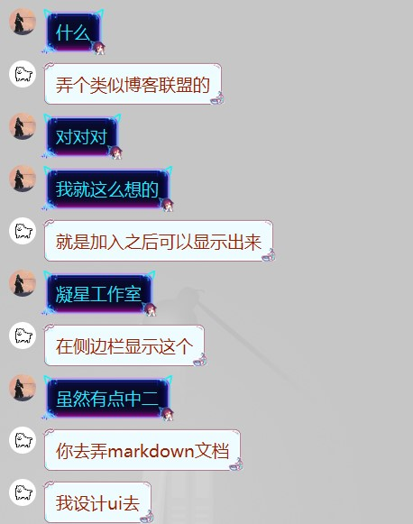

欢迎来到凝星工作室!
👑创意来源🎨
好了轮到我yu寜来搞一下这个b了[bushi]
故事是这样的：
在一个月黑风高的夜晚....

好了不得不说想到一块去了，咱们说干就干
🙆♂️我们是谁🙆♀️
这个工作室是由两个在昌邑一中的高中狗wangyuning和xingmouren建立的.
要不是有网课,要不是这个货让我搞blog,(好吧其实是我自己想搞的...),大家可能就见不到这个工作室了.
怎么说还得是俺xing哥,要没有他我也混不到今天,托管,维护都是他搞的(谁让这货有钱...)
🧬名称创意🗿
因为我俩名字最后一个自分别是"宁"和"兴"，但是叫"宁兴"实在太拉了，所以搞了个同音词"凝星"，听起来高端一点。
我们的logo还在设计中，具体方案就是要有W,N,X,M,A,H的元素N,X就是凝星，W因为我们都姓王，M,A是我博客名的前两个字母，H,A那就是他的了。
🥇我们的目标🏆
现在我们的工作室正在开发中，急需大佬的支持和帮助。
主要还是想创造一个良好的代码学习、交流的氛围，让更多像我一样的小白能够轻松入坑，也能让大佬们展示更多的才能，提出更多的创意，从而不仅能让我们受益，也能让更多互联网公民受益。
🎆加入我们🎇
好了，话不多说了，加入我们一起折腾吧！！！
这是我们的QQ
wangyuning：350860521
xingmouren：263852678